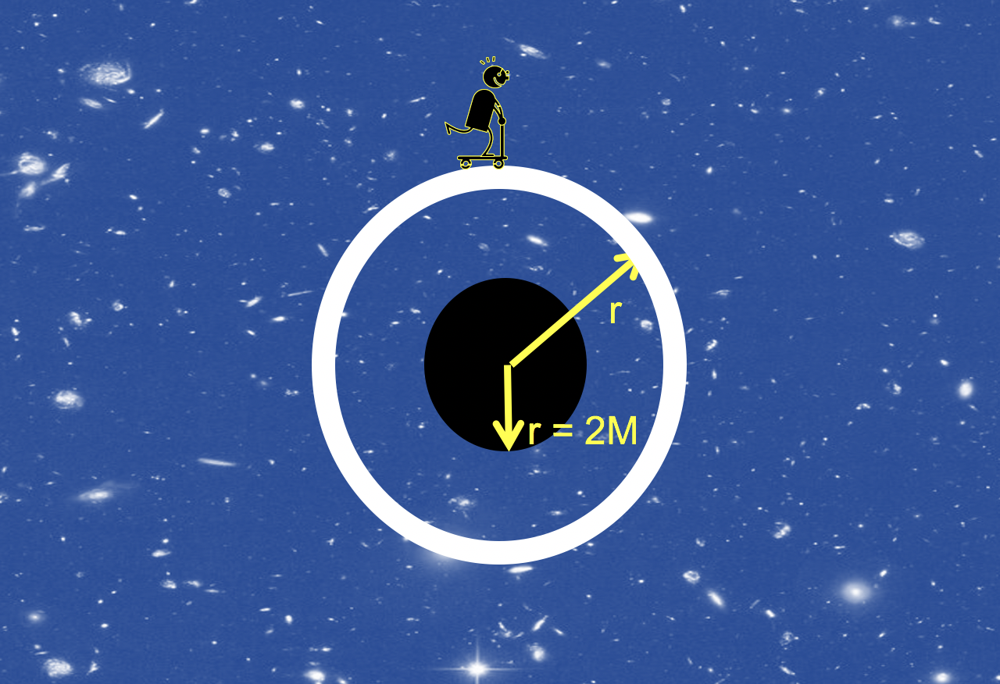

Forrige side🙂 🙁3 observatørerPADLET

La oss nå se på skallobservatøren. Skallobservatøren har sin egen klokke til å måle skalltid tsh. MERK at skalltiden avhenger av hvilket skall (altså hvilken r) som skallobservatøren står på. Skallobservatører på forskjellige skall vil ikke være enige om tiden tsh. Vi har sett at skallobservatøren må måle omkretsen av skallet for å finne koordinaten r. Denne koordinaten er ikke det målet som skallobservatøren bruker til å måle avstander med, dette er kun langt vekk-observatørens lengdemål. Vi skal snart se forskjellen på disse to, men la oss først begynne med å se på forskjellen mellom tiden t for et event målt av langt-vekkobservatøren og tiden tsh målt av skallobservatøren på et skall r.